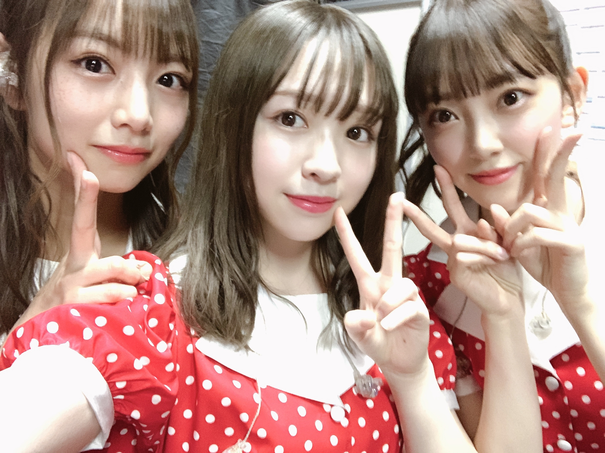
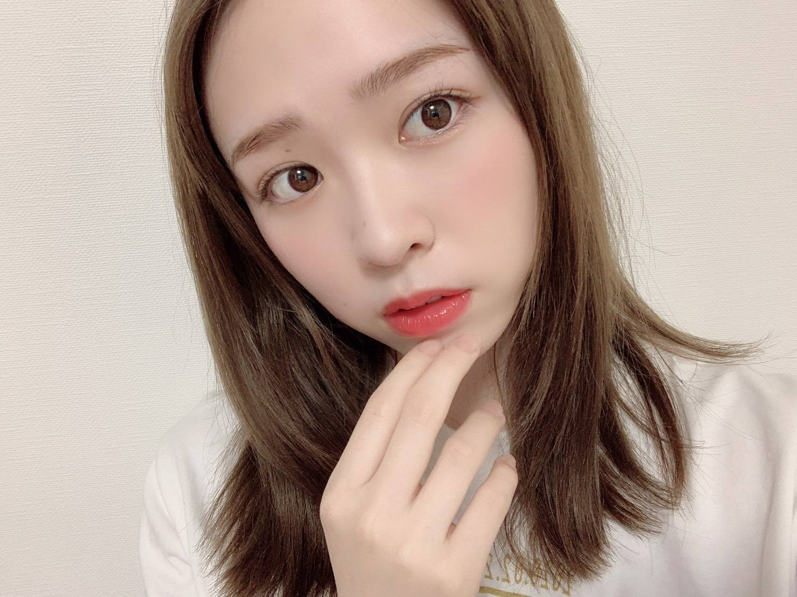

2020/0302Mon帽子は三色
皆様こんばんは！
8th YEAR BIRTHDAY LIVE が
無事終了いたしました。
お越しくださった皆様、ありがとうございました！
リハーサル期間はとても大変だったけど、
出させた頂いた1曲1曲が大切で
また素敵な思い出となりました。
思い入れがある曲で言えば
風船は生きているの演出では
久しぶりに
♪穴が開いた気がするんだ〜
の後のみんなが私を囲んで指を
指してくれるところを踊れて、
私は凄く嬉しかったです。
後ろのスクリーンでは砂絵を使った
物語を作ってくださっていて
スタッフの皆様にも大感謝でした。
あの時のオリジナルメンバーはもう
ほとんどいなくて寂しい気持ちもあったけど
新たにポジションに入ってくれていた子達が
楽しそうに踊っているのを見て
とても嬉しかったです。
君が扇いでくれた
間奏で一人で踊らさせていただきました。
たった数秒の世界だけど
4日目と言うこともあり、
気持ち込め込めで踊りました。
少しでも伝わってくれていたら嬉しいです
乃木坂46メンバーみんなの良さが詰まった
ライブで、どの曲も演出もとても良かった！
みんな可愛い！！！！
メンバーの顔一人一人の笑顔を見ながら
本当にみんな可愛くて綺麗で
このグループにいられて本当に幸せだなあと
思いました。

ゴルゴンゾーラ隊
8周年、改めておめでとう乃木坂46！
先日発表がありましたが、
3月7日に開催予定だった2期生ライブが
中止となりました。
楽しみにされていた皆様、申し訳ございません。
悔しいけれどそれでも皆さんの安全が少しでも
守られるなら、私は嬉しいです
次の機会があると信じて前を見るしかない！
皆さんに絶対お見せしたい！
だからそれまで、待っていてくださいね。

みり愛
2020/03/02 19:42
コメント(542)
バスラお疲れ様！初日の風船見たかったな〜
でも3日目と4日目は見に行けてめっちゃ楽しかった！
握手会また行くよー！楽しみにしてるね！
でも3日目と4日目は見に行けてめっちゃ楽しかった！
握手会また行くよー！楽しみにしてるね！
お疲れ様です！
風船を目の前で見れて本当に最高でした！
風船を目の前で見れて本当に最高でした！
バースデーライブ4日間お疲れ様でした！
最終日だけの参加だったけど、君が扇いでくれたのソロダンスはしっかりと見られました。風船も良かったってみんなが言ってたから見たかったなーと後悔。
二期生ライブが中止になってしまったのは悲しいけど、楽しみがあるかもってことで！願ってます
最終日だけの参加だったけど、君が扇いでくれたのソロダンスはしっかりと見られました。風船も良かったってみんなが言ってたから見たかったなーと後悔。
二期生ライブが中止になってしまったのは悲しいけど、楽しみがあるかもってことで！願ってます
ブログ更新ありがとう。
バスラ4日間お疲れ様！
2.3.4日目に遊びにいったよ。
風船は生きているの披露を観られなかったのは、残念だけどみり愛ちゃんのパフォーマンスが大好きなんだなと改めて思えたライブだった。
君が扇いでくれたのソロダンス、とても綺麗だったよ。
もうみり愛ちゃんのパフォーマンスを早く観たくてうずうずしてる笑
二期生ライブまた次の機会があるって信じてるよ。
それまでまた力を貯めておこう。
ずっと楽しみにしてるよ。
25枚目シングルの握手会も遊びにいくよ。
じぁまたね。
hideto
バスラ4日間お疲れ様！
2.3.4日目に遊びにいったよ。
風船は生きているの披露を観られなかったのは、残念だけどみり愛ちゃんのパフォーマンスが大好きなんだなと改めて思えたライブだった。
君が扇いでくれたのソロダンス、とても綺麗だったよ。
もうみり愛ちゃんのパフォーマンスを早く観たくてうずうずしてる笑
二期生ライブまた次の機会があるって信じてるよ。
それまでまた力を貯めておこう。
ずっと楽しみにしてるよ。
25枚目シングルの握手会も遊びにいくよ。
じぁまたね。
hideto
みりあちゃんブログ更新ありがとう！！
バスラ行けなくて断念だったけど、25枚目の全握行くから待っててほしい！！
バスラ行けなくて断念だったけど、25枚目の全握行くから待っててほしい！！
お疲れ様〜
好きなゲームあるー？
体調気をつけて！
好きなゲームあるー？
体調気をつけて！
更新ありがとう。
未央奈ちゃんと日奈子ちゃんとみり愛ちゃんのスリーショット写真かわいい
２期生単独ライブ中止なっちゃって残念ですね。
そのうちまたライブのチャンスがあるといいね。
未央奈ちゃんと日奈子ちゃんとみり愛ちゃんのスリーショット写真かわいい
２期生単独ライブ中止なっちゃって残念ですね。
そのうちまたライブのチャンスがあるといいね。
みりあーーー
みり愛ちゃん、ブログ更新ありがとう☺︎︎4日目のソロダンス、とってもかっこよかったです。お疲れ様でした！！！
次の機会がありますように！切に願ってます。
バスラ行ったよー全握行くね！
バスラお疲れ様でした！
3日目と4日目に参加したんだけど、
風船聞けなくて残念でした。
でも他の曲で輝いてるみり愛を沢山見れて、
とっても楽しかったです！
2期ライブは残念だけど、
次の握手会とライブ、楽しみにしてます！
これからも頑張ってね
3日目と4日目に参加したんだけど、
風船聞けなくて残念でした。
でも他の曲で輝いてるみり愛を沢山見れて、
とっても楽しかったです！
2期ライブは残念だけど、
次の握手会とライブ、楽しみにしてます！
これからも頑張ってね
ブログ更新ありがとう！！
バスラお疲れ様！本当に大変な中、最高に楽しい時間をありがとう
初日だけ行けなくて風船見れなかったのが悔しいけど…みり愛のかわいい笑顔、かっこいいダンスたくさん見れて最高でした！！
2期ライブ、また絶対チャンスあるよ！楽しみに待とう！
バスラお疲れ様！本当に大変な中、最高に楽しい時間をありがとう
初日だけ行けなくて風船見れなかったのが悔しいけど…みり愛のかわいい笑顔、かっこいいダンスたくさん見れて最高でした！！
2期ライブ、また絶対チャンスあるよ！楽しみに待とう！
バスラ全日参戦したよ！
2期ライブ中止は今は仕方ないからまた今度するのを楽しみに待ってます！
2期ライブ中止は今は仕方ないからまた今度するのを楽しみに待ってます！
ブログ更新ありがとうございます♪
バスラお疲れ様でしたー
二期生のライブは残念ですが
ゆっくり休んでくださいね♪
バスラお疲れ様でしたー
二期生のライブは残念ですが
ゆっくり休んでくださいね♪
初日行ったよー！みり愛ちゃんいっぱい見れて最高に楽しかった！2期生ライブ諦めずにいつかまたやって欲しいな〜！
君が扇いでくれた
とっても可愛かったです
2期生ライブほんと残念でしたね
個握が中止にならないことを願ってます
とっても可愛かったです
2期生ライブほんと残念でしたね
個握が中止にならないことを願ってます
ブログ更新ありがとう！
そして、8thbirthday LIVEお疲れ様でした！
4日間200曲すべて聴くことできたよ！！
ボーダー、Am I Loving?、風船、ゴルゴンゾーラ、欲望のリインカーネーションが特に良かったよ！！
ボーダーは思わず泣いてしまった。
琴子ちゃんが参加できなかったとこを他の2期生全員でカバーしてて2期生の団結力を見た気がした。
ライブの度にみり愛ちゃんのパフォーマンス凄いなって思う。
大きくしなやかな動きでめちゃめちゃ目立つし輝いてる
2期生ライブはまた今度だね！
もちろん残念だなーって思うし琴子ちゃんが乃木坂にいる間にやってほしいなって思うけど、このご時世だからね…泣
だから、卒業したメンバー込みで2期生全員でやってほしいな！
難しいかも知れないけど期待してます。
ラジオもお疲れ様でした。
しっかり聞いてたよ！！
コメントもめちゃめちゃ面白かった笑
これから半年間ぐらい学業に専念するけどまた就職決まったら報告に行くね！
よろしくお願いします！
これからもみり愛ちゃんらしくがんばれ！！
そして、8thbirthday LIVEお疲れ様でした！
4日間200曲すべて聴くことできたよ！！
ボーダー、Am I Loving?、風船、ゴルゴンゾーラ、欲望のリインカーネーションが特に良かったよ！！
ボーダーは思わず泣いてしまった。
琴子ちゃんが参加できなかったとこを他の2期生全員でカバーしてて2期生の団結力を見た気がした。
ライブの度にみり愛ちゃんのパフォーマンス凄いなって思う。
大きくしなやかな動きでめちゃめちゃ目立つし輝いてる
2期生ライブはまた今度だね！
もちろん残念だなーって思うし琴子ちゃんが乃木坂にいる間にやってほしいなって思うけど、このご時世だからね…泣
だから、卒業したメンバー込みで2期生全員でやってほしいな！
難しいかも知れないけど期待してます。
ラジオもお疲れ様でした。
しっかり聞いてたよ！！
コメントもめちゃめちゃ面白かった笑
これから半年間ぐらい学業に専念するけどまた就職決まったら報告に行くね！
よろしくお願いします！
これからもみり愛ちゃんらしくがんばれ！！
みり愛


ブログ更新ありがとう♡
バスラ改めてお疲れ様でした！
久しぶりに乃木坂のライブ行って久しぶりにみりあちゃんが踊ってるところ見たんだけどやっぱり好きだなあってなったよ、、
やっぱり乃木坂が好きー！みり愛ちゃんが好きー！ってなった！バスラ1日目しか行けなかったんだけど、ランダムだし風船と君が扇いでくれた、見れないだろうなって思ってたから風船見れて本当に幸せだったなぁ、、イントロ流れて友達に抱きついたくらいには嬉しかったよ、、(笑)あとアムライラビングも可愛いかったなぁ！！ゴルゴンゾーラの衣装着てるみり愛ちゃんめちゃくちゃ可愛いよーー幸せーー本当に幸せ(笑)みり愛ちゃんだいすき 2期ライブできなかったの悔しいけど、絶対絶対またやってほしい！！その時を楽しみに頑張るよ♡
2期ライブできなかったの悔しいけど、絶対絶対またやってほしい！！その時を楽しみに頑張るよ♡
バスラ改めてお疲れ様でした！
久しぶりに乃木坂のライブ行って久しぶりにみりあちゃんが踊ってるところ見たんだけどやっぱり好きだなあってなったよ、、
やっぱり乃木坂が好きー！みり愛ちゃんが好きー！ってなった！バスラ1日目しか行けなかったんだけど、ランダムだし風船と君が扇いでくれた、見れないだろうなって思ってたから風船見れて本当に幸せだったなぁ、、イントロ流れて友達に抱きついたくらいには嬉しかったよ、、(笑)あとアムライラビングも可愛いかったなぁ！！ゴルゴンゾーラの衣装着てるみり愛ちゃんめちゃくちゃ可愛いよーー幸せーー本当に幸せ(笑)みり愛ちゃんだいすき
バスラでゴルゴンゾーラ聞けて夢が１つ叶いました。
だからもう少しの間、新しい夢の続きをたのしみます。いつかくるそのときまで。
だからもう少しの間、新しい夢の続きをたのしみます。いつかくるそのときまで。
8thバスラお疲れ様！
二期生ライブは中止になってしまった事はみり愛ちゃんが謝らないで！
仕方のない事だと分かっています。その分バスラを開催出来たのは奇跡のように思ってるよ〜
風船で会場が白一色に染まった景色はとても綺麗だったよ！
またね！
二期生ライブは中止になってしまった事はみり愛ちゃんが謝らないで！
仕方のない事だと分かっています。その分バスラを開催出来たのは奇跡のように思ってるよ〜
風船で会場が白一色に染まった景色はとても綺麗だったよ！
またね！
バスラお疲れ様です！
ライブめちゃくちゃ感動しました！
とりあえずゆっくり休んでください！
2期生ライブは残念だったけど
次の機会のために前向きに頑張りたいところ！
楽しみにしています！
ライブめちゃくちゃ感動しました！
とりあえずゆっくり休んでください！
2期生ライブは残念だったけど
次の機会のために前向きに頑張りたいところ！
楽しみにしています！
渡辺みり愛❤こんばんは❗４日間のバースデーライブご苦労様❗楽しかったかな？覚える事沢山あって大変だよね。でもみり愛は頑張ったね(^o^)v新型コロナウイルスが流行ってるから２期生ライブ中止になって残念だったね(T_T)今度２期生ライブあるといいね(^-^)vみり愛は、大丈夫？体調に気を付けて頑張ってね(^o^)v今日もみり愛可愛いよ(*^O^*)大好きだし愛してる ♥❤❤❤❤❤
1日目参戦しました！風船とっても感動しました。ナゴヤドームも1面真っ白で素敵でしたね(^^) 2期生ライブもいつか絶対できると信じてます！！
みり愛ちゃんブログ更新ありがとう！
やっぱり風船はサイコーだね
アリーナの特等席で見れて良かった。
君が扇いでくれたのソロダンスほんとに凄かった。言葉に言い表せないすごさがあったよ。みり愛のダンスにはほんとに惹きつけられるものがある。
ゴルゴンゾーラ隊可愛いすぎる
2期生ライブ中止は残念だったけど今回はしょうがないよね。
2期生ライブ開催されるの楽しみにしとくね！
チケット当てて絶対行くね！
やっぱり風船はサイコーだね
アリーナの特等席で見れて良かった。
君が扇いでくれたのソロダンスほんとに凄かった。言葉に言い表せないすごさがあったよ。みり愛のダンスにはほんとに惹きつけられるものがある。
ゴルゴンゾーラ隊可愛いすぎる
2期生ライブ中止は残念だったけど今回はしょうがないよね。
2期生ライブ開催されるの楽しみにしとくね！
チケット当てて絶対行くね！
みり愛ちゃんブログ更新ありがとう！！
やっぱり風船見たかったなぁ！笑
ゴルゴンゾーラ見たことないから次こそは！！君が扇いでくれたのそのダンスめっちゃかっこよかった！！
二期生ライブのこともありがとうね次こそは成功させよう！！
大好き！！
やっぱり風船見たかったなぁ！笑
ゴルゴンゾーラ見たことないから次こそは！！君が扇いでくれたのそのダンスめっちゃかっこよかった！！
二期生ライブのこともありがとうね次こそは成功させよう！！
大好き！！
みり愛たーーーん＼(^o^)／お疲れさまでした
バスラお疲れさまでした
ああ、風船は本当に大好きな曲だよ＼(^o^)／見たかったなあ(｡>﹏<｡)♡♡♡
そして、先日のまいちゅんのANNもお疲れさまでした＼(^o^)／
久しぶりの動きみり愛見れて楽しかったよ＼(^o^)／
ああ、ゴルゴンゾーラ組の３S良いなあ＼(^o^)／
これからも頑張って(/･ω･)/
きゃーー、最後のみり愛たんの写真は綺麗すぎるよ(｡>﹏<｡)♡♡
そういえば、バスラにれんたんとふざけてたよね、本人がのぎおびで言ってたよ＼(^o^)／
バスラお疲れさまでした
ああ、風船は本当に大好きな曲だよ＼(^o^)／見たかったなあ(｡>﹏<｡)♡♡♡
そして、先日のまいちゅんのANNもお疲れさまでした＼(^o^)／
久しぶりの動きみり愛見れて楽しかったよ＼(^o^)／
ああ、ゴルゴンゾーラ組の３S良いなあ＼(^o^)／
これからも頑張って(/･ω･)/
きゃーー、最後のみり愛たんの写真は綺麗すぎるよ(｡>﹏<｡)♡♡
そういえば、バスラにれんたんとふざけてたよね、本人がのぎおびで言ってたよ＼(^o^)／
みりあちゃんバースデーライブお疲れさまです！
みりあちゃんソロダンスの、君が扇いでくれた
見たかったなあ;;
そして2期生単独ライブ
もともと予定があって現地参戦は
出来なかったのですが
とっても楽しみにしていました
ファンとしても念願の単独ライブ…
今回は仕方がないとはいえ、中止になってしまって
とっても悲しいです;;
いつか必ず、また2期生単独ライブをやるときには
現地で参加したいと思います☼
それまでずっとずっと応援してます☼
みりあちゃんソロダンスの、君が扇いでくれた
見たかったなあ;;
そして2期生単独ライブ
もともと予定があって現地参戦は
出来なかったのですが
とっても楽しみにしていました
ファンとしても念願の単独ライブ…
今回は仕方がないとはいえ、中止になってしまって
とっても悲しいです;;
いつか必ず、また2期生単独ライブをやるときには
現地で参加したいと思います☼
それまでずっとずっと応援してます☼
ブログありがとうございます。私もみりあさんみたいになりたいです。乃木坂に入ってみりあさんと共演したいです。質問好きなアイドルの振り付けはは？
ブログ更新ありがとう！
これからも応援してます！
がんばれ！
これからも応援してます！
がんばれ！
みり愛ちゃん、こんばんは。
ブログの更新ありがとうございます。
バースデーライブ、日々見所満載でしたね。
全部書いちゃうとコメント欄を埋め尽くしてしまいそうな
そんな勢いです。
こんな素晴らしきライブに4日間ともはいらせていただけ
色々な方々にとても感謝しております。
本当にありがとうございます。
会場が真っ白に染まった風船はもちろんのことですが、
ふいにドアから現れたAm I Loving？、
私自身はじめてパフォーマンスを見れたゴルゴンゾーラ
(ゴルゴンゾーラ後にゆっくり可愛らしくいなくなる姿)、
2期パートで披露したボーダー、かき氷、スカウトマン、ライブ神、
セクシーさ全開のリインカーネーション、
ソロダンスの際立った君が扇いでくれた、
目の前で丸々一曲パフォーマンスを見れた羽根の記憶、
毎日注目度満点の蓮加ちゃんとのアンコール、
扇風機でのおふざけ感、などなどなどなど、
語りたいことがたくさんあります。
多すぎて書き漏れもたくさんありそうな予感。
無茶して4泊5日で見に行ったかいがありました。
握手会はまだ先ですができれば直接色々な感想を
伝えたいかな。
また、2期生ライブ残念ではありますが仕方ないですね。
必ずまたやるチャンスが来ると信じて言霊を
発し続けたいとおもいます。
コロナちゃんはもちろんですが他も含めて
体調を崩しやすい時期ですので、みり愛ちゃんは
体調を崩さないよう気を付けてください。
自分は現在インフルエンザです泣
それでは、また。
ブログの更新ありがとうございます。
バースデーライブ、日々見所満載でしたね。
全部書いちゃうとコメント欄を埋め尽くしてしまいそうな
そんな勢いです。
こんな素晴らしきライブに4日間ともはいらせていただけ
色々な方々にとても感謝しております。
本当にありがとうございます。
会場が真っ白に染まった風船はもちろんのことですが、
ふいにドアから現れたAm I Loving？、
私自身はじめてパフォーマンスを見れたゴルゴンゾーラ
(ゴルゴンゾーラ後にゆっくり可愛らしくいなくなる姿)、
2期パートで披露したボーダー、かき氷、スカウトマン、ライブ神、
セクシーさ全開のリインカーネーション、
ソロダンスの際立った君が扇いでくれた、
目の前で丸々一曲パフォーマンスを見れた羽根の記憶、
毎日注目度満点の蓮加ちゃんとのアンコール、
扇風機でのおふざけ感、などなどなどなど、
語りたいことがたくさんあります。
多すぎて書き漏れもたくさんありそうな予感。
無茶して4泊5日で見に行ったかいがありました。
握手会はまだ先ですができれば直接色々な感想を
伝えたいかな。
また、2期生ライブ残念ではありますが仕方ないですね。
必ずまたやるチャンスが来ると信じて言霊を
発し続けたいとおもいます。
コロナちゃんはもちろんですが他も含めて
体調を崩しやすい時期ですので、みり愛ちゃんは
体調を崩さないよう気を付けてください。
自分は現在インフルエンザです泣
それでは、また。
ブログ更新ありがとう
2期生ライブ中止になったのは悲しかったけどいつかまた開催される時までずっと2期生とみり愛ちゃんのこと応援し続けます。
握手会行くのでその時はよろしく
2期生ライブ中止になったのは悲しかったけどいつかまた開催される時までずっと2期生とみり愛ちゃんのこと応援し続けます。
握手会行くのでその時はよろしく
楽しまさせていただきました！
最近…風船は生きているはいい曲だなぁと繰り返し聞いてます。
一生懸命頑張る姿、影ながら応援してます(^｡^)
これからも楽しく歌う姿見せてくださいね。
最近…風船は生きているはいい曲だなぁと繰り返し聞いてます。
一生懸命頑張る姿、影ながら応援してます(^｡^)
これからも楽しく歌う姿見せてくださいね。
バスラお疲れ様でした！
4日間フルで参加させてもらいました！
風船も君が扇いでくれたも
生で聴けて本当に本当に嬉しかったー
れんたんとのわちゃわちゃも可愛かった（笑）
4日間フルで参加させてもらいました！
風船も君が扇いでくれたも
生で聴けて本当に本当に嬉しかったー
れんたんとのわちゃわちゃも可愛かった（笑）
お疲れ様です。
バスラお疲れ様でした～。風船が聴けてとっても嬉しかったよ！
二期生ライブ楽しみに待ってるね:-)
バスラお疲れ様でした～。風船が聴けてとっても嬉しかったよ！
二期生ライブ楽しみに待ってるね:-)
みり愛〜バスラお疲れ。
風船も、君が扇いでくれたもみれて良かった。
風船はほんと好きな楽曲だし、嬉しかったな。
いっぱいみり愛〜って叫んだよ笑
２期ライブは残念だけど、次楽しみに待ってるね。
風船も、君が扇いでくれたもみれて良かった。
風船はほんと好きな楽曲だし、嬉しかったな。
いっぱいみり愛〜って叫んだよ笑
２期ライブは残念だけど、次楽しみに待ってるね。
更新ありがとう！
バスラ最終日だけ行ったけど欲望のみり愛ちゃんの印象が強すぎてもうそれしか考えられなくなった笑
2期生ライブ無くなったのはすごく残念だけど仕方ないよね…またいつかリベンジできると期待して待ってるね！
バスラ最終日だけ行ったけど欲望のみり愛ちゃんの印象が強すぎてもうそれしか考えられなくなった笑
2期生ライブ無くなったのはすごく残念だけど仕方ないよね…またいつかリベンジできると期待して待ってるね！
みり愛ちゃんブログ更新ありがとう！
バースデーライブは初日のみの参戦で風船は生きているが観れて最高でした！
君が扇いでくれた、ゴルゴンゾーラなどその他にもたくさんみり愛が参加している曲を観たかったです！
2期生ライブは悔しいですね。でもみり愛ちゃんが前を向いているならファンの自分たちも前を向かなきゃ！
また機会があると信じています。2期生は嵐。2期生の力は絶大です！
いつもみり愛ちゃんには力をもらっています。これからも体には気をつけて輝いてください！
バースデーライブは初日のみの参戦で風船は生きているが観れて最高でした！
君が扇いでくれた、ゴルゴンゾーラなどその他にもたくさんみり愛が参加している曲を観たかったです！
2期生ライブは悔しいですね。でもみり愛ちゃんが前を向いているならファンの自分たちも前を向かなきゃ！
また機会があると信じています。2期生は嵐。2期生の力は絶大です！
いつもみり愛ちゃんには力をもらっています。これからも体には気をつけて輝いてください！
みり愛ちゃんバスラお疲れさま！！
自分は初日と2日目に参戦しました！！
ゴルゴンゾーラとかみり愛がセンターの風船とか生でみれてめっちゃよかった(* ﾟ∀ﾟ)
2日目はアリーナだったからみり愛ちゃんがたくさん見れて幸せだった(^^)
コロナ心配だったけど無事開催できてなによりです。
ステージで輝くみり愛ちゃんはやっぱり素敵でした。
2期生ライブ中止は悲しいです‥‥
はじめての2期生単独でのライブがやっと開催できると思ったのに中止は悔しいです、、、
でもメンバーの体調が第一なので体調には気をつけて下さい(..)
絶対にまたいつか2期生ライブ開催しましょう！！
2期生のファンはいつまでも待ってます！！！
いつか2期生の底力を見せてくれることを楽しみにして待ってます！！
僕は来年から社会人になり環境が変わりますが、変わらずみり愛ちゃんを推し続けます( *´艸)
また握手会に行くのでそれまで辛抱します、、
いつもみり愛ちゃんに元気をもらっているのでまた元気なみり愛ちゃんをみれることを楽しみにしてます！
ブログとかモバメとか待ってまーす( ＾∀＾)
体調には気をつけて( ；∀；)
自分は初日と2日目に参戦しました！！
ゴルゴンゾーラとかみり愛がセンターの風船とか生でみれてめっちゃよかった(* ﾟ∀ﾟ)
2日目はアリーナだったからみり愛ちゃんがたくさん見れて幸せだった(^^)
コロナ心配だったけど無事開催できてなによりです。
ステージで輝くみり愛ちゃんはやっぱり素敵でした。
2期生ライブ中止は悲しいです‥‥
はじめての2期生単独でのライブがやっと開催できると思ったのに中止は悔しいです、、、
でもメンバーの体調が第一なので体調には気をつけて下さい(..)
絶対にまたいつか2期生ライブ開催しましょう！！
2期生のファンはいつまでも待ってます！！！
いつか2期生の底力を見せてくれることを楽しみにして待ってます！！
僕は来年から社会人になり環境が変わりますが、変わらずみり愛ちゃんを推し続けます( *´艸)
また握手会に行くのでそれまで辛抱します、、
いつもみり愛ちゃんに元気をもらっているのでまた元気なみり愛ちゃんをみれることを楽しみにしてます！
ブログとかモバメとか待ってまーす( ＾∀＾)
体調には気をつけて( ；∀；)
みり愛ちゃんブログ更新ありがとう！
まずはバースデーライブお疲れ様でした！
素敵なライブありがとうございました！
久しぶりのライブやはりいいですね
会場の雰囲気、メンバーの表情だったり、ダンスだったり、
いろんな表現力で楽しませてくれるので最高です！
2期生ライブ、中止になってしまったのは残念だけど、プラスに考えると楽しみが何倍にも膨れ上がって想像を超えてくるパフォーマンスを絶対見せてくれるんだろうな〜とワクワクしております。
ぜひ待ってますね！
まずはバースデーライブお疲れ様でした！
素敵なライブありがとうございました！
久しぶりのライブやはりいいですね
会場の雰囲気、メンバーの表情だったり、ダンスだったり、
いろんな表現力で楽しませてくれるので最高です！
2期生ライブ、中止になってしまったのは残念だけど、プラスに考えると楽しみが何倍にも膨れ上がって想像を超えてくるパフォーマンスを絶対見せてくれるんだろうな〜とワクワクしております。
ぜひ待ってますね！
みんなが元気であることが大事なので、その日が来るまで体調に気をつけて元気に楽しく過ごして下さいね。
(^ー^)
(^ー^)
みり愛ちゃんブログ更新ありがと！
8thバスラお疲れ様でした！
今回１番印象に残ったのが風船の時に会場が真っ白になったこと！
本当に嬉しくて泣いてしまいました笑
本当にみり愛ちゃんのパフォーマンスも素敵でなんかたくさん泣いてしまいました笑
2期生ライブは中止になっちゃったけど俺らもみり愛ちゃん、メンバーの体調考えたらしかたがない事だってみんなわかってるはず！
俺らのことも考えての決断だったと思うし。
今度は名古屋の個握行きます！
早くみり愛ちゃんに会いたいです(^-^)
8thバスラお疲れ様でした！
今回１番印象に残ったのが風船の時に会場が真っ白になったこと！
本当に嬉しくて泣いてしまいました笑
本当にみり愛ちゃんのパフォーマンスも素敵でなんかたくさん泣いてしまいました笑
2期生ライブは中止になっちゃったけど俺らもみり愛ちゃん、メンバーの体調考えたらしかたがない事だってみんなわかってるはず！
俺らのことも考えての決断だったと思うし。
今度は名古屋の個握行きます！
早くみり愛ちゃんに会いたいです(^-^)
ブログありがとう！
バスラお疲れ様でした。
個人的にやっぱり1日目が良かったかな！風船とAm I lovingを1日でみれるという贅沢な日でした〜
あの風船のときのみり愛ちゃんは特別輝いて見えて、みり愛推しで良かったと思えます。
みり愛ちゃんやみり愛推しの皆さまにとって大切な曲なので何回聴いても感動します！
あと！3日目のアンコール最後でみり愛ちゃんがタオルに気付いてくれたのめちゃくちゃ嬉しかったです！一生の思い出。
かなりんのモノマネも面白かった〜
二期ライブ中止はとても悔しいけど、またいつか開催できること心底祈ります。
この機会に身体を休めて頂きたいです！
また次のライブ、握手会まで楽しみにしてます
バスラお疲れ様でした。
個人的にやっぱり1日目が良かったかな！風船とAm I lovingを1日でみれるという贅沢な日でした〜
あの風船のときのみり愛ちゃんは特別輝いて見えて、みり愛推しで良かったと思えます。
みり愛ちゃんやみり愛推しの皆さまにとって大切な曲なので何回聴いても感動します！
あと！3日目のアンコール最後でみり愛ちゃんがタオルに気付いてくれたのめちゃくちゃ嬉しかったです！一生の思い出。
かなりんのモノマネも面白かった〜
二期ライブ中止はとても悔しいけど、またいつか開催できること心底祈ります。
この機会に身体を休めて頂きたいです！
また次のライブ、握手会まで楽しみにしてます
みりあちゃん、こんばんは〜
2期生の子は口々に謝罪の言葉を
述べるけど、もうやめよう。
誰も悪くないんだから…
むしろ3月7日を記念日にして欲しいな。
今すぐには無理かもしれないけど
いつか振り返った時に笑える様に。
2期生にはこれくらいの逆境で
ちょうどいいよ。
3月7日は○○記念日
○の所は皆で考えて決めて下さい。
では。
2期生の子は口々に謝罪の言葉を
述べるけど、もうやめよう。
誰も悪くないんだから…
むしろ3月7日を記念日にして欲しいな。
今すぐには無理かもしれないけど
いつか振り返った時に笑える様に。
2期生にはこれくらいの逆境で
ちょうどいいよ。
3月7日は○○記念日
○の所は皆で考えて決めて下さい。
では。
2期生ライブ絶対あるよ！
そう信じてる✨
みりあちゃん本当に可愛い
２期のライブあったら絶対行くね
またそれから握手会にも行けたら行きます
コロナとか体調管理に気をつけて頑張ってください
大好きです
そう信じてる✨
みりあちゃん本当に可愛い
２期のライブあったら絶対行くね
またそれから握手会にも行けたら行きます
コロナとか体調管理に気をつけて頑張ってください
大好きです
みり愛さんブログ更新ありがとうございます！
先日までバスラお疲れ様でした。バスラの前まで体調を崩してたのにも関わらず最高のパフォーマンスで感激しました。みり愛さん推しで良かったと心から思うことができました。
2期生ライブの中止は仕方のないことなのでみり愛さんやメンバーが謝ることはないですよ。我々ファンも中止は悔しいけどメンバーも同じくらいまたはそれ以上に楽しみにしてたと思います。またリベンジで2期生ライブができることを願ってます。
コロナの影響で握手会がやるかわからない状況ですが今度延期や中止にならなければ握手会にも参加させて頂きたいと思っているのでその際はよろしくお願いいたします。
コロナの他にもインフルや風邪にも気をつけて1日1日大切に頑張ってください！
これからもずっと応援してます。
先日までバスラお疲れ様でした。バスラの前まで体調を崩してたのにも関わらず最高のパフォーマンスで感激しました。みり愛さん推しで良かったと心から思うことができました。
2期生ライブの中止は仕方のないことなのでみり愛さんやメンバーが謝ることはないですよ。我々ファンも中止は悔しいけどメンバーも同じくらいまたはそれ以上に楽しみにしてたと思います。またリベンジで2期生ライブができることを願ってます。
コロナの影響で握手会がやるかわからない状況ですが今度延期や中止にならなければ握手会にも参加させて頂きたいと思っているのでその際はよろしくお願いいたします。
コロナの他にもインフルや風邪にも気をつけて1日1日大切に頑張ってください！
これからもずっと応援してます。
みり愛。
birthdayLIVEお疲れ様でした！
体調崩しつつのリハ期間だったけど、無事完走出来て何よりです！
個人的なところではじゅんちゃんとつねにイチャイチャしてたイメージがあります笑
さて、2期生単独ライブ。
当ててました。
このもどかしい気持ちはどこにぶつけたらいいものでしょうか。
とりあえずコロナのバカやろ！！！！｡･ﾟ･(ﾉД`)･ﾟ･｡
仕方ないとはいえ、絶対に2期生単独ライブは叶えようね。
2期生の夢、2期生推しの夢。
こんなことでは折れませんから。
あまりのショックでインフルかかっちゃいましたけど(ϋ)/
さっさと治します(・ω・`)
みり愛も体調しっかりね！
大好きです！
birthdayLIVEお疲れ様でした！
体調崩しつつのリハ期間だったけど、無事完走出来て何よりです！
個人的なところではじゅんちゃんとつねにイチャイチャしてたイメージがあります笑
さて、2期生単独ライブ。
当ててました。
このもどかしい気持ちはどこにぶつけたらいいものでしょうか。
とりあえずコロナのバカやろ！！！！｡･ﾟ･(ﾉД`)･ﾟ･｡
仕方ないとはいえ、絶対に2期生単独ライブは叶えようね。
2期生の夢、2期生推しの夢。
こんなことでは折れませんから。
あまりのショックでインフルかかっちゃいましたけど(ϋ)/
さっさと治します(・ω・`)
みり愛も体調しっかりね！
大好きです！
みり愛ちゃんブログ更新ありがとう！
まずはなんといってもバスラお疲れさま☺️ バスラは毎日違うセトリだからリハーサルほんと大変そうだよね うちは受験生だから行けなかったけどずっと遠くからエール送ってたよ！ みり愛ちゃんセンターの風船は生きているはもちろん、ソロダンスのあった君が扇いでくれたもめっちゃ見たかったよ〜 改めてみり愛ちゃん乃木坂入ってくれて本当にありがとう☺️ これからも応援させてください！ 大好きだよ 2期ラ中止になっちゃったね、、、こればかりはしょうがないけど当選して楽しみにしてたから悲しかった、、、ずっとうちは待ってるから絶対2期単独叶えようね！！！ 2期生大好きだよ、、！！
またコメントするね( ˙-˙ )
まずはなんといってもバスラお疲れさま☺️ バスラは毎日違うセトリだからリハーサルほんと大変そうだよね うちは受験生だから行けなかったけどずっと遠くからエール送ってたよ！ みり愛ちゃんセンターの風船は生きているはもちろん、ソロダンスのあった君が扇いでくれたもめっちゃ見たかったよ〜 改めてみり愛ちゃん乃木坂入ってくれて本当にありがとう☺️ これからも応援させてください！ 大好きだよ 2期ラ中止になっちゃったね、、、こればかりはしょうがないけど当選して楽しみにしてたから悲しかった、、、ずっとうちは待ってるから絶対2期単独叶えようね！！！ 2期生大好きだよ、、！！
またコメントするね( ˙-˙ )


ゴルゴンゾーラ隊、顔面偏差値高すぎる。
2期生ライブ当たってたから残念だけど、いつかきっと、またその機会が来ると信じてるし、楽しみにしています！しあわせの保護色の個別でまたみり愛ちゃんに会えるので、それを糧に日々仕事や厳しい社会状況と戦っていきます。みり愛ちゃんも体調には充分過ぎるほど気をつけて下さい。